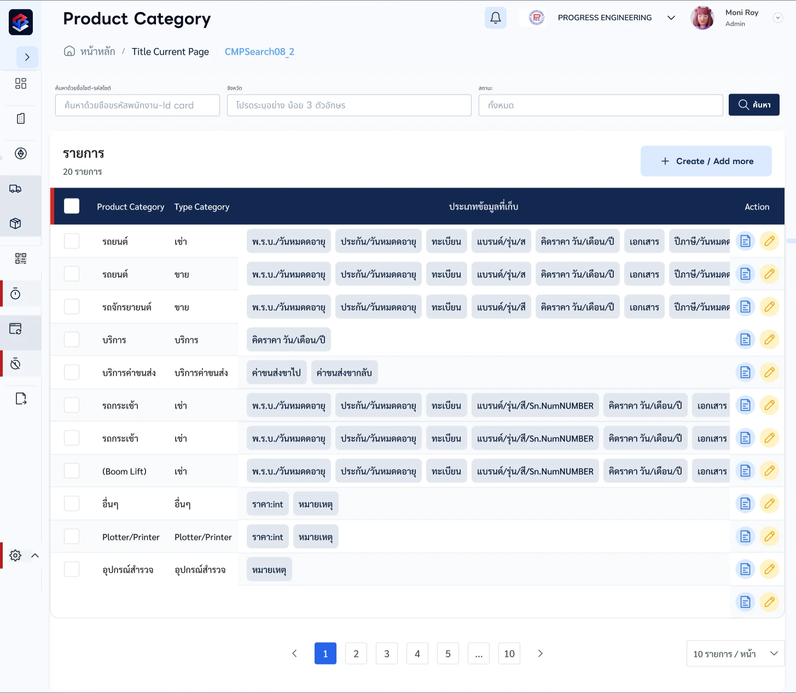
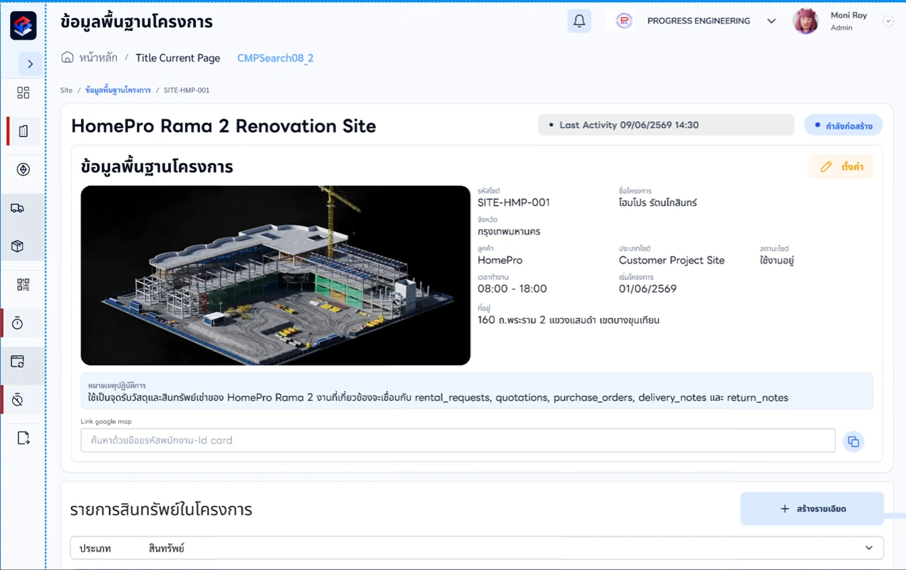
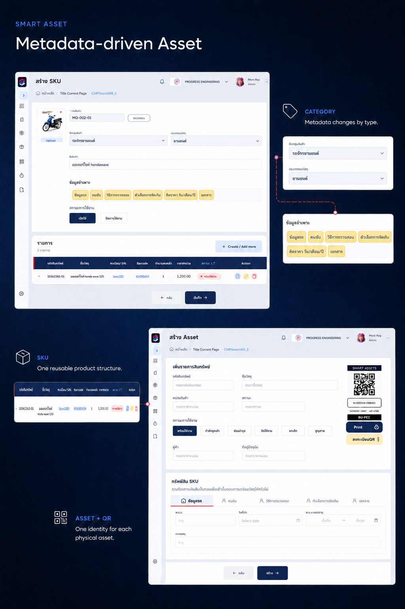
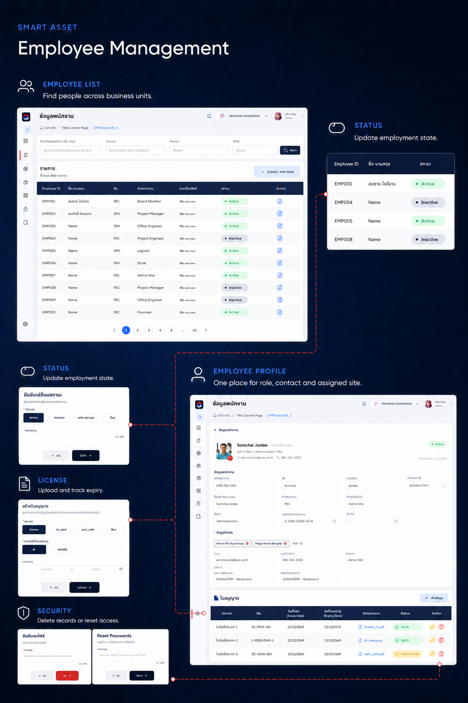

การจัดการทรัพย์สิน / การวิเคราะห์ระบบ
Smart Asset SA & AI
Smart Asset คือระบบ ERP ขนาดเบาที่ผมร่วมออกแบบและพัฒนากับ Software Engineer และ AI
ในบทบาท UX × SA Intern ผมทำสเปกเบื้องต้นและร่วมออกแบบ UX/UI ของโครงการกับ Software Engineer โดยใช้ AI ช่วยในการทำงาน
Master Asset / Site operation
กติกาของ Category กำหนด metadata ที่ใช้ซ้ำใน SKU ก่อนที่ทรัพย์สินจริงแต่ละชิ้นจะได้รับ identity, QR, สถานะ และบริบทของไซต์
ข้อมูลตั้งต้น
การทำงานที่ไซต์
-

01 กำหนด Categoryกำหนด Category กำหนดโครงสร้างร่วมของสินค้ากำหนดโครงสร้างร่วมของสินค้า -

02 จัดโครงข้อมูลเฉพาะจัดโครงข้อมูลเฉพาะ เลือก metadata ที่แต่ละ Category ต้องใช้เลือก metadata ที่แต่ละ Category ต้องใช้ -

03 สร้าง SKU ที่ใช้ซ้ำสร้าง SKU ที่ใช้ซ้ำ เปลี่ยนกติกา Category เป็นแม่แบบที่นำกลับมาใช้ได้เปลี่ยนกติกา Category เป็นแม่แบบที่นำกลับมาใช้ได้ -
03 ส่งต่อ metadataส่งต่อ metadata ใช้โครงเดียวกันกับทรัพย์สินที่ลงทะเบียนแต่ละชิ้นใช้โครงเดียวกันกับทรัพย์สินที่ลงทะเบียนแต่ละชิ้น -

04 ลงทะเบียน Asset + QRลงทะเบียน Asset + QR สร้าง identity ให้ทรัพย์สินจริงแต่ละชิ้นสร้าง identity ให้ทรัพย์สินจริงแต่ละชิ้น -

05 ผูกเข้ากับ SiteSite + สถานะใช้งาน เชื่อมทรัพย์สินกับผู้รับผิดชอบและตำแหน่งใช้งานแสดงเจ้าของ ตำแหน่ง สถานะ และสิ่งที่ต้องทำต่อในมุมมองเดียว -
06 ติดตามสถานะใช้งานติดตามสถานะใช้งาน ทำให้สถานะและสิ่งที่ต้องทำต่อมองเห็นได้ตลอด lifecycleทำให้สถานะและสิ่งที่ต้องทำต่อมองเห็นได้ตลอด lifecycle


- กำหนด Category → จัดโครงข้อมูลเฉพาะ: กำหนดฟิลด์
- จัดโครงข้อมูลเฉพาะ → สร้าง SKU ที่ใช้ซ้ำ: วาง metadata
- สร้าง SKU ที่ใช้ซ้ำ → ส่งต่อ metadata: ใช้โครงร่วม
- ส่งต่อ metadata → ลงทะเบียน Asset + QR: สร้าง identity
- ลงทะเบียน Asset + QR → ผูกเข้ากับ Site: ผูกเข้ากับไซต์
- ผูกเข้ากับ Site → ติดตามสถานะใช้งาน: ติดตามสถานะ
- โครงการ
- Smart Asset SA & AI
- ผลิตภัณฑ์
- Smart Asset Management
- ประเภทงาน
- Asset Management
- Warehouse Workflow
- บทบาทของผม
- UX × SA Intern
ความท้าทาย
จะออกแบบแพลตฟอร์มเดียวให้รองรับทั้งทรัพย์สินต่างชนิดและคนที่ต้องจัดการทรัพย์สินเหล่านั้นได้อย่างไร
แนวทางและผลลัพธ์
ผมรับผิดชอบงานสเปกตั้งต้นและการออกแบบ โดยใช้ flow การทำงานเป็นกรอบว่าหน้าจอแต่ละส่วนต้องรองรับอะไรบ้าง
ระบบใช้งานจริงแล้ว จากที่ผมสังเกต ระบบทำงานได้ดีโดยรวม แต่การใช้งานประจำวันทำให้เห็นความติดขัดเรื่องการเข้าถึงผ่าน SKU และข้อมูลที่ย้ายมายังไม่ครบ
01 · ปัญหา
Master Asset ไม่เคยมีรูปแบบเดียว
รถยนต์ สว่าน ปูนหนึ่งถุง และใบอนุญาตอาจอยู่ในเมนูเดียวกัน แต่แต่ละชนิดมี identity, quantity model, ประวัติ และ lifecycle ต่างกัน

02 · สเปกเบื้องต้น
ทำให้ requirement ตั้งต้นมองเห็นได้
ผมจัดทำสเปกเบื้องต้นควบคู่กับการออกแบบ UX/UI โดยวาง requirement ตั้งต้นร่วมกับ Software Engineer ขอบเขตนี้ยังไม่ได้ลงลึกเป็นข้อกำหนดทางเทคนิคทุกส่วนของระบบ
03 · บริบทการทำงาน
ทุกหน้าจออยู่ใน flow ที่ยาวกว่า
คำขอ ใบเสนอราคา การยืนยัน การจอง การส่ง การใช้ การคืน และการวางบิลต่างมีสถานะของตัวเอง การวาง flow ทำให้การตัดสินใจบนหน้าจอมีบริบทปฏิบัติการที่เชื่อถือได้

04 · โมเดล
ทรัพย์สินต่างชนิดต้องการความจริงต่างกัน
ทรัพย์สินถาวรต้องติดตามรายชิ้นและประวัติการเคลื่อนย้าย วัสดุสิ้นเปลืองต้องมี lot และ quantity ส่วนเอกสารต่ออายุต้องเก็บข้อมูลตามวันที่และรักษาหลักฐานเดิม

05 · หลังใช้งานจริง
โครงข้อมูลยังต้องมีทางเข้าที่ผู้ใช้เข้าใจ
ผู้ใช้ไม่เข้าใจว่าทำไมต้องมี SKU ก่อนสร้างทรัพย์สินจริง ขณะเดียวกันการย้ายข้อมูลสองรอบยังไม่ครบ ทำให้ความติดขัดมารวมอยู่ตอนเพิ่มข้อมูลทรัพย์สินจำนวนมาก สิ่งนี้ทำให้เห็นว่าโครงข้อมูลเพียงอย่างเดียวยังไม่ช่วยให้ผู้ใช้เข้าใจลำดับการทำงาน
06 · แผนปรับปรุงถัดไป
เข้าดู Asset ได้โดยตรง โดยคงความสัมพันธ์กับ SKU
ขั้นถัดไปที่ผมวางไว้คือเติมและปรับข้อมูลที่นำเข้าให้ครบ พร้อมเพิ่มทางเข้าดู Asset โดยไม่ต้องเปิดผ่าน SKU ก่อน โครงสร้างและความสัมพันธ์กับ SKU ยังคงเดิม แนวทางนี้เป็นแผนปรับการเรียกดู ไม่ได้ยกเลิก SKU ในขั้นตอนสร้าง Asset และยังไม่ได้ประเมินผลหลังปรับ
Appendix
หลักฐานการเข้าใจ flow ของระบบ
บันทึกแบบกระชับว่างานขยายจากการตัดสินใจบนหน้าจอไปสู่ขั้นตอนปฏิบัติการอย่างไร กดแต่ละภาพเพื่อดู activity diagram ฉบับเต็ม